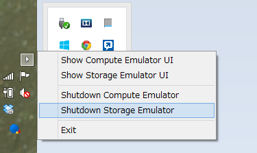
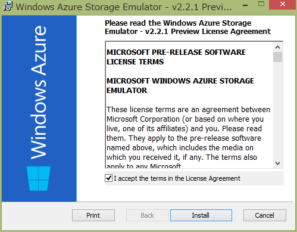
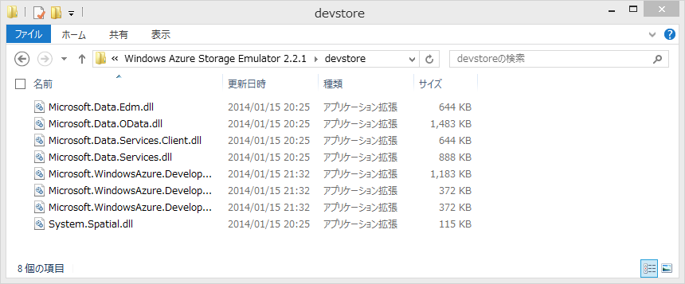
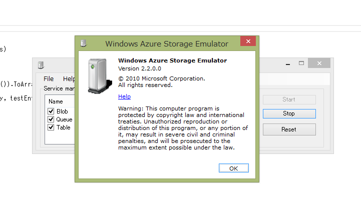

FiddlerCoreでRead-Access Geo Redundant Storage を検証する
Windows Azure – 技術者でつなぐ日めくりカレンダーの 3/2 の記事です。先日、Windows Azure 4周年記念 ＆ Japan DCオープンマジデシタ！JAZUG大会のLTで、Azure Storageには3つの可用性設定があるという話をしました。例によって、時間内には収まらず。「続きはWebで・・・」ということで続きです orz
まずはLTの内容の復習から、簡単にまとめると下記のような内容です。
振り返り
Azure Storageの可用性設定（冗長構成）には3種類ある。
- ローカル冗長ストレージ (LRS=Locally Redundant Storage)データセンター内3箇所、同期
- 地理冗長ストレージ (GRS=Geo Redundant Storage)地理的に離れた場所への複製（Local 3箇所＋リモート3箇所）、リモートは非同期、フェイルオーバー
- 読み取りアクセス地理冗長ストレージ (RA-GRS=Read Access - Geo Redundant Storage) PREVIEW地理的に離れた場所にあるデータを読む機能
読み取りアクセス地理冗長ストレージ (以下、RA-GRS）は、現状Previewなので、まずはWindows Azure Previewのページで申し込みをする必要がある。
SDKの対応状況
RA-GRSの新機能を使うには REST version 2013-08-15 を使うStorage SDKが必要。ただし、RESTでEndpointが違うだけだから自前でもアクセスするだけならそんなに難しくない。
- .NETだと、Storage Client Library 3.0以降
- Javaだと、Windows Azure Storage SDK for Java 0.5.0以降
- その他、各自対応
上記2つのSDKには、Blobs, Tables and Queues の最終同期時刻（Last Sync Time）をクエリーする機能と primary にアクセしできなかった時に secondary に自動的に retry する機能、並びにLocationMode で参照先の設定がる。リトライは、IRetryPolicyを拡張した IExtendedRetryPolicy が追加されている。これではリトライ時に参照先を切り替えするようになっている。
LTの資料
RA-GRS Windows Azure Storage LT
ここからが本題です。
確認する
RA-GRSで障害が起きた時のIExtendedRetryPolicyの動作確認をしたいのですが、そうは都合良くデータセンターの障害が起きるわけはありません。デバッガーでBreakしてネットワークを切断するとか、変数を書き換えるとかの方法もありますが、なんども繰り返すのは手間が掛かるしパターン増やすと面倒です。そんな時に、丁度いいタイミングでCLR/H in Tokyo 第1回で過酷な争奪戦に勝利し「実践Fiddler」をゲットしました。

FidderCoreを使うとHTTP通信の途中に割り込んで内容を変更することが簡単に出来ます。フルスクラッチでProxy書いて「ゴニョゴニョ」すると結構手間がかかるので、今回は、FeddlerCoreを使って サクッとLocationMode.PrimaryThenSecondary を指定した時のリトライ動作を確認します。本にはいろいろ詳しく書いてあるので、興味が出た方は是非！
準備
下記の場所から、インストーラーを落としてきて入れます。exeが落ちてくるのでインストールすると、FiddlerCoreAPIというディレクトリーに入ります。
http://www.telerik.com/fiddler/fiddlercore

インストール先のFiddlerCoreAPI\DotNet4\FiddlerCore4.dllを参照に追加します。

今回読み込みアクセスを試したいので、予めBlob にファイルを上げて起きます。
Blobからのダウンロードのコードは下記のような感じです。CloudBlobClient の LocationModeを設定しています。Client全体の設定はここで書き、ここのリクエストでは、BlobRequestOptionsで設定します。それ以外は普通のBlobからDownloadするコードですね。try の次の行ので読んでいる、FiddlerCoreSetup()でFiddlerCoreの設定を行っています。
static void Main(string[] args)
{
var connectionString = CloudConfigurationManager.GetSetting("ConnectionString") ?? "UseDevelopmentStorage=true";
var account = CloudStorageAccount.Parse(connectionString);
var client = account.CreateCloudBlobClient();
try
{
FiddlerCoreSetup(client.StorageUri.PrimaryUri.Host);
// プライマリ→セカンダリで切り替え
client.LocationMode = LocationMode.PrimaryThenSecondary;
var container = client.GetContainerReference("jejeje");
var blob = container.GetBlockBlobReference("cray.png");
blob.DownloadToFile("cray.png", FileMode.OpenOrCreate);
}
finally
{
FiddlerCoreShutdown();
}
}
FiddlerCoreSetup() の中を見てみましょう。基本的には必要な処理をFiddlerのイベントハンドラに追加して、FidderCore プロキシを起動するだけです。
private static void FiddlerCoreSetup(string blockedHostName)
{
FiddlerApplication.AfterSessionComplete += os =>
Console.WriteLine("AfterSessionComplete Session {0}({4}):{1} {2} {3}",
os.id, os.responseCode, os.RequestMethod, os.fullUrl, os.oResponse.MIMEType);
FiddlerApplication.BeforeRequest += os =>
{
if (os.HostnameIs(blockedHostName))
{
Console.WriteLine("BeforeRequest Session {0} {1} {2}", os.id, os.hostname, os.host);
os.host = blockedHostName + ".jejeje";
}
};
FiddlerApplication.Startup(0, FiddlerCoreStartupFlags.ChainToUpstreamGateway);
var endpoint = string.Format("127.0.0.1:{0}", FiddlerApplication.oProxy.ListenPort);
var feddlerProxy = new WebProxy(endpoint);
WebRequest.DefaultWebProxy = feddlerProxy;
Console.WriteLine(endpoint);
}
private static void FiddlerCoreShutdown()
{
FiddlerApplication.Shutdown();
}
ちょっと細かく追いかけてみます。
AfterSessionCompleteはHTTP セッションが完了した後に生成されるイベントです。 このイベントハンドラにロギング代わりにコンソールへの書き出しを追加します。。今回は、ここのログを見て何処にアクセスに行っているのかを確認します。
BeforeRequestはHttp リクエストのデータが揃いサーバーに接続する前に生成されるイベントです。このイベントハンドラに、Primary のホストが接続先だったときに、存在しないhostに繋ぎに行くようなハンドラを追加します。
FiddlerApplication.Startup()を呼び出して、FeddlerCoreプロキシインスタンスを起動します。ポートに0を指定すると、FeddlerCore が自動的に空いているポートを探してリスニングに入ってくれます。ポートが使用中の問題が発生しないので便利なので、ポート番号を固定したいとき以外は0で良いと思います。自動で割り当てられたポート番号は FiddlerApplication.oProxy.ListenPort で確認できます。
今回は、このアプリケーションから出るリクエストだけ操作できればいいので、FiddlerCoreStartupFlagsにChainToUpstreamGatewayを指定します。その他に、システム全体のProxyに入りたい場合は、RegisterAsSystemProxyを使います。
そして、WebRequestのDefaultWebProxyを、FeddlerCoreプロキシ で書き換えます。これで、Azure Storage Client のリクエストが、Primary に向いているときは失敗するようになりました。
これで、実行すると下記のようになります。
127.0.0.1:19282
BeforeRequest Session 1 ragrsomi001jp.blob.core.windows.net ragrsomi001jp.blob.core.windows.net
AfterSessionComplete Session 1(text/html):502 GET http://ragrsomi001jp.blob.core.windows.net.jejeje/jejeje/cray.png?timeout=90
AfterSessionComplete Session 2(image/png):200 GET http://ragrsomi001jp-secondary.blob.core.windows.net/jejeje/cray.png?timeout=90
最初に、Primary にアクセスし、その後 Secondary にアクセスし直しているのがわかります。
Primary へのアクセスが502 Bad Gatewayなのはちょっとイマイチですが、FeddlerCoreがProxyで入るので仕方がないのかもしれません。
まとめ
実は、FeddlerCoreは、Azure Storage ClientのUnit Testでも使われています。GitHub azure-storage-net HttpMangler.cs今回は非常に簡単な例を紹介しましたが、FeddlerCoreを使うとレスポンスを偽装したり変更したりなど柔軟にできて、通常エラーにならないような場合のテストケースを作ることができます。手軽に使えるのでカジュアルに使っても便利ですし、がっちりUnitTestを作るときにも役に立ちます。
CLR/H in Tokyo 第1回はいろいろ知らないことを聴けたので面白かったですね。特に、技術者のブランディング戦略の重要性と独自の進化を遂げたプロビジョニング、構成管理ツールの話が秀逸だった。
最後に１つだけ、FiddlerCore をnugetで配布してくれると嬉しいなぁ・・・
Windows Azure Storage Emulator 2.2.1 Preview
Azure Storage 愛好者待望の、Azure Storage Emulator の 2013-08-15 version サポートがリリースされました。（まだ、preview ですが）
Windows Azure Storage Emulator 2.2.1 Preview Release with support for “2013-08-15” version
Windows Azure Storage Emulator 2.2.1 Preview Release の MSI package は、ここからダンロードできます。

インストールの手順
この release では、Windows Azure SDK 2.2 が予めインストールされている必要があります。これは preview release で、インストーラーは、Windows Azure Storage Emulator 2.2 のバイナリーを自動では入れ替えません。代わりに、32bit OSでは、"%ProgramFiles%\Windows Azure Storage Emulator 2.2.1\devstore"に、64 bit OSでは"%ProgramFiles(x86)%\Windows Azure Storage Emulator 2.2.1\devstore"にバイナリーを展開します。
更新されたエミュレータ(2.2.1 preview)を利用する場合は下記のステップを踏んでください。
- Storage Emuratorの停止
- "%ProgramFiles%\Microsoft SDKs\Windows Azure\Emulator\devstore"にある既存のファイル(2.2)を他のディレクトリに保存
- 新たにインストールされた2.2.1 preview のファイルを"%ProgramFiles%\Microsoft SDKs\Windows Azure\Emulator\devstore"へ上書き
以前のエミュレータ(2.2)に戻す場合は、Storage Emuratorを停止して保存したファイルを戻します。この方法で、簡単に2.2のStorage Emuratorに戻すことができ、SDK 2.2の再インストールなどは必要ありません。
これはちょっと手間ですが、Windows Azure Storage Emulator 2.2.1 Preview Release with support for “2013-08-15” versionによると、preview のための暫定的な処理のようです。
Do It
やってみます。まず、最初にAzure Storage Emulatorが動いていたら止めます。
Windows Azure Storage Emulator 2.2.1 Preview Release の MSI package を、ここからダンロードしてきてインストールします。
インストールが終わると、README.txt が表示されます。上に書いたようなことが書いてあります。

手元はx64環境なので、"%ProgramFiles(x86)%\Windows Azure Storage Emulator 2.2.1\devstore"にファイルが有るかを確認します。インストーラーは、ここにファイルを展開しますが、ここだと実行されません。これから規定の場所にコピーします。
問題無さそうなので、"%ProgramFiles%\Microsoft SDKs\Windows Azure\Emulator\devstore"のファイルをZIPで固めて避難してから、2.2.1のファイルをコピー上書きします。
確認
まずはStorage Emulatorを実行して起動を確認します
普通に Windows Azure Storage Emulator - v2.2 のショートカットをクリックする方法以外に、下記のようにコマンドラインから起動をすることも出来ます。
$ .\csrun.exe /devstore
Windows(R) Azure(TM) Desktop Execution Tool version 2.2.0.0
for Microsoft(R) .NET Framework 4.0
Copyright c Microsoft Corporation. All rights reserved.
Starting the storage emulator...
$
起動してきたので、念のためバージョン番号を確認します。残念ながら変わっていません…
次にJSONでアクセスしてみます。Install-Package WindowsAzure.Storage後、下記のようなコードを書いて実行します。
using System;
using System.Linq;
using Microsoft.WindowsAzure.Storage;
using Microsoft.WindowsAzure.Storage.Table;
namespace WASE221pre
{
public static class Program
{
public static void Main(string[] args)
{
var acct = CloudStorageAccount.DevelopmentStorageAccount;
var tableClient = acct.CreateCloudTableClient();
var table = tableClient.GetTableReference("TestTable");
table.CreateIfNotExists();
var entity = new TableEntity
{
PartitionKey = "pk",
RowKey = string.Format("rk{0}", DateTime.UtcNow.Ticks)
};
table.Execute(TableOperation.Insert(entity));
var rows = table.ExecuteQuery(new TableQuery<TableEntity>()).ToArray();
foreach (var testEntity in rows)
Console.WriteLine("{0}, {1}", testEntity.PartitionKey, testEntity.RowKey);
}
}
}
<?xml version="1.0" encoding="utf-8"?>
<packages>
<package id="Microsoft.Data.Edm" version="5.6.0" targetFramework="net451" />
<package id="Microsoft.Data.OData" version="5.6.0" targetFramework="net451" />
<package id="Microsoft.Data.Services.Client" version="5.6.0" targetFramework="net451" />
<package id="Microsoft.WindowsAzure.ConfigurationManager" version="1.8.0.0" targetFramework="net451" />
<package id="Newtonsoft.Json" version="5.0.8" targetFramework="net451" />
<package id="System.Spatial" version="5.6.0" targetFramework="net451" />
<package id="WindowsAzure.Storage" version="3.0.2.0" targetFramework="net451" />
</packages>
実行結果
$ WASE221pre.exe
pk, rk635265773262439816
pk, rk635265773303542415
pk, rk635265773965590960
pk, rk635265774455960355
pk, rk635265824937388844
上手く行きました。（何度か実行したので複数のエンティティがあります）
本当にJSONで流れているのかどうか念のために確認します。
接続文字列を、"UseDevelopmentStorage=true;DevelopmentStorageProxyUri=http://ipv4.fiddler"に変更します。
// var acct = CloudStorageAccount.DevelopmentStorageAccount;
var acct = CloudStorageAccount.Parse("UseDevelopmentStorage=true;DevelopmentStorageProxyUri=http://ipv4.fiddler");
実行してCaptureを確認します。
リクエスト
GET http://127.0.0.1:10002/devstoreaccount1/TestTable?timeout=90 HTTP/1.1
User-Agent: WA-Storage/3.0.2 (.NET CLR 4.0.30319.34003; Win32NT 6.3.9600.0)
x-ms-version: 2013-08-15
Accept-Charset: UTF-8
MaxDataServiceVersion: 3.0;NetFx
Accept: application/json;odata=minimalmetadata
x-ms-client-request-id: a4ed326b-e3a6-43f9-bb6e-8fb295014473
x-ms-date: Wed, 29 Jan 2014 09:04:42 GMT
Authorization: SharedKey devstoreaccount1:7Wt86EphqhTZTwLxkMrAkPGNV9WDSKa0df5Feaw8zkU=
Host: 127.0.0.1:10002
レスポンス
HTTP/1.1 200 OK
Cache-Control: no-cache
Transfer-Encoding: chunked
Content-Type: application/json;odata=minimalmetadata;streaming=true;charset=utf-8
Server: Windows-Azure-Table/1.0 Microsoft-HTTPAPI/2.0
x-ms-request-id: fdd3f33e-e2d7-401e-a4c6-7654bd7ae584
x-ms-version: 2013-08-15
X-Content-Type-Options: nosniff
Date: Wed, 29 Jan 2014 09:04:42 GMT
285
{"odata.metadata":"http://127.0.0.1:10002/devstoreaccount1/$metadata#TestTable","value":[{"PartitionKey":"pk","RowKey":"rk635265773262439816","Timestamp":"2014-01-29T07:28:46.35Z"},{"PartitionKey":"pk","RowKey":"rk635265773303542415","Timestamp":"2014-01-29T07:28:50.513Z"},{"PartitionKey":"pk","RowKey":"rk635265773965590960","Timestamp":"2014-01-29T07:29:56.707Z"},{"PartitionKey":"pk","RowKey":"rk635265774455960355","Timestamp":"2014-01-29T07:30:45.74Z"},{"PartitionKey":"pk","RowKey":"rk635265824937388844","Timestamp":"2014-01-29T08:54:54.147Z"},{"PartitionKey":"pk","RowKey":"rk635265830822644693","Timestamp":"2014-01-29T09:04:42.46Z"}]}
0
無事に動いていることを確認できました。
最後に
preview ですが、Storage Emulatorが 2013-08-15 versionをサポートし、軽くですがJSONでのアクセスが動くことを確認できました。12月のWindows Azure Storage Client Library for C++ Previewでは、2013-08-15 version 対応のStorage Emulator が、来月には出せそうということだったので、ほぼ予定通りですね。どうしても手元で確認したい場合は、Storage Emulator 2.2.1 previewを使って、そうでない場合は本番を利用して開発ということになりそうです。
Windows Azure Storage 3.0.2 Hotfix
2014/1/4Windows Azure Storage 3.0.2がリリースされました。2013/11/27 3.0のリリース 「Windows Azure Storage Release - CORS、JSON、Minute Metrics の紹介」、2013/12/11 の 3.0.1 hotfix 「Windows Azure Storage Client 3.0.1」 に続く３回めのリリースです。

修正点
- All (WP): 多くのAPIで ArgumentOutOfRangeException になる問題の修正
- Queues: 存在するqueueの再度作成で、NullReferenceException になる問題を修正
- Tables: レスポンスがparseできなかったときに、TableServiceContext が NullReferenceException になる問題を修正
- Tables (RT): JSON形式がまだRT library でサポートされていないため、ユーザーは、RTで RequestOptions に JsonFullMetadata formart を設定することはできません
コードを確認したところ、最初のやつが興味深いものでした。
1. All (WP): 多くのAPIで ArgumentOutOfRangeException になる問題の修正
対象は、Windows Phone プラットフォームだけで特定のAPIでなく全般的に発生します。関連する Issue として 、System.ArgumentOutOfRangeException in Microsoft.WindowsAzure.Storage.Table.CloudTable.EndExecuteが出ています。
共通で使っている、API内のパラメータのバウンダリー検査関数（AssertInBounds）が動いていなくてあちこちで問題が発生するということになっていたようです。（そうは言っても、テストはしているので、そうそう起きるわけでは無いとは思います）
Storage Client Library 3.0.2 のPRでdiffを見みると、WINDOWS_PHONEだけで下記のように修正されていました。

#if WINDOWS_PHONE で AssertInBounds に、[System.Runtime.CompilerServices.MethodImpl(System.Runtime.CompilerServices.MethodImplOptions.NoOptimization)]を指定しています。この指定は、JITやNGENでのコード最適化を抑制するもので、[1]Windows Phone の場合だけ native code 生成に問題があったので抑制するオプションを付けたということです。
Windows Phone というだけで、どのような場合に発生する問題かなどわかりませんが、WP アプリのコードが挙動不審の場合は試してみると良いかもしれません。Storage Clinet Library内では、この方法で修正されているようなので問題は無いのですが、普通に書いたコードでも起きるとすると、ちょっと困りますね。もう少し詳しい情報が欲しいところです。[2]
これ以外は、あまり気になる点はありませんでした。互換性の問題も無さそうなので、3系のStorage Clinetは 3.0.2 を使うのがお勧めです。
2014/1/11 追記 Windows Phoneの問題
PR の質問に返事を貰いました。
この問題は、Windows Phone でだけ起き、assemblyに、AssertInBoundsとAssertInBounds 両方が存在する場合に、最適化で実行時にAssertInBoundsの間違ったインスタンス化を選択することによって引き起こされる
internal static void AssertInBounds<T>(string paramName, T val, T min, T max) where T : IComparableと、internal static void AssertInBounds<T>(string paramName, T val, T min) where T : IComparableの両方が同一 assembly にあるのが問題のようです。 必ず起きるというわけでも無さそうなので、Windows Phone で嵌ったら思い出してみるという程度で良さそうです。
| [1] | About System.Runtime.CompilerServices.MethodImplOptions |
| [2] | We escalated this internally … |
[Resolved] Windows Azure Storage Known Issues 2013/11
Windows Azure Storage Known Issues 2013/11の既知の問題が解決されたとアナウンスがありました。Windows Azure Storage Known Issues (November 2013) [Resolved]どんな感じになったのかを確認しました。
引用

問題点の確認
問題点は下記の3つが有りました。「3」は、既に、Storage Client 2.1.0.4 以降での Cast問題の修正で、Client Library 2.1.0.4、3.xで修正確認ができているので、ここでは1と2を確認します。
SASとコンテナの前の “//” 問題
下記のようなプログラムで確認しました。Signitureの生成結果を確認しやすいように、2013/12/01から一年有効なREADのSASにしています。Storage Client 2.1.0.4 では、2012-02-12 versionが使われて、コンテナの前が"//"になっていても動きましたが、3.0.1だと、2013-08-15 versionが使われ、400 のエラーで弾かれるという結果になりました。もともと、"//"と書いたら"/"と解釈されるというのはあまりイケてない動きなので、古いバージョンのみ互換性を持つように変更して新しいものでは動作変更ということにしたのは妥当な落とし所かと思います。Storage Versionによって動作が違うようです。
private static string GetSASUrl(CloudStorageAccount storageAccount, string containerName, string blobName)
{
var blobClient = storageAccount.CreateCloudBlobClient();
var container = blobClient.GetContainerReference(containerName);
var blockBlob = container.GetBlockBlobReference(blobName);
var startDate = DateTime.Parse("2013/12/01");
var sas = blockBlob.GetSharedAccessSignature(new SharedAccessBlobPolicy()
{
Permissions = SharedAccessBlobPermissions.Read,
SharedAccessStartTime = startDate,
SharedAccessExpiryTime = startDate.AddYears(1)
});
return blockBlob.Uri.ToString() + sas;
}
2.1.0.4での確認結果
Install-Package WindowsAzure.Storage -Version 2.1.0.4で2.1.0.4を入れます。何度も、違うバージョンのライブラリを入れ替えて使っていて、混乱したので念のためpackage.configの内容を併記します。
<?xml version="1.0" encoding="utf-8"?>
<packages>
<package id="Microsoft.Data.Edm" version="5.2.0" targetFramework="net451" />
<package id="Microsoft.Data.OData" version="5.2.0" targetFramework="net451" />
<package id="Microsoft.WindowsAzure.ConfigurationManager" version="1.8.0.0" targetFramework="net451" />
<package id="System.Spatial" version="5.2.0" targetFramework="net451" />
<package id="WindowsAzure.Storage" version="2.1.0.4" targetFramework="net451" />
</packages>
生成されたURLで成功を確認
{kind=link}
コンテナの前に、"/"を追加して確認、成功！
{kind=link}
sv=2012-02-12になっていて、versionがわかります。
3.0.1での確認結果
Install-Package WindowsAzure.Storageで最新版、3.0.1で確認
<?xml version="1.0" encoding="utf-8"?>
<packages>
<package id="Microsoft.Data.Edm" version="5.6.0" targetFramework="net451" />
<package id="Microsoft.Data.OData" version="5.6.0" targetFramework="net451" />
<package id="Microsoft.Data.Services.Client" version="5.6.0" targetFramework="net451" />
<package id="Microsoft.WindowsAzure.ConfigurationManager" version="1.8.0.0" targetFramework="net451" />
<package id="Newtonsoft.Json" version="5.0.8" targetFramework="net451" />
<package id="System.Spatial" version="5.6.0" targetFramework="net451" />
<package id="WindowsAzure.Storage" version="3.0.1.0" targetFramework="net451" />
</packages>
生成されたURLで成功を確認
![http://test.blob.core.windows.net/images/photo.jpg?sv=2013-08-15&sr=b&sig=[signiture]&se=2014-11-30T15%3A00%3A00Z&sp=r](http://test.blob.core.windows.net/images/photo.jpg?sv=2013-08-15&sr=b&sig=[signiture]&se=2014-11-30T15%3A00%3A00Z&sp=r){kind=link}
コンテナの前に、"/"を追加。これは失敗します。
![http://test.blob.core.windows.net//images/photo.jpg?sv=2013-08-15&sr=b&sig=[signiture]&se=2014-11-30T15%3A00%3A00Z&sp=r](http://test.blob.core.windows.net//images/photo.jpg?sv=2013-08-15&sr=b&sig=[signiture]&se=2014-11-30T15%3A00%3A00Z&sp=r){kind=link}
レスポンスを見ると下記のようになっていました。（XMLは整形してあります）
HTTP/1.1 400 The requested URI does not represent any resource on the server.
Content-Length: 434
Content-Type: application/xml
Server: Microsoft-HTTPAPI/2.0
x-ms-request-id: a9275897-8810-48b2-bcd5-d45af85f6f14
Date: Fri, 27 Dec 2013 12:34:46 GMT
<?xml version="1.0" encoding="utf-8"?>
<Error>
<Code>InvalidUri</Code>
<Message>
The requested URI does not represent any resource on the server.
RequestId:a9275897-8810-48b2-bcd5-d45af85f6f14
Time:2013-12-27T12:34:46.6851586Z
</Message>
<UriPath>
http://test.blob.core.windows.net//images/photo.jpg?sv=2013-08-15&sr=b&sig=[signiture]&se=2014-11-30T15:00:00Z&sp=r
</UriPath>
</Error>
TableのDataServiceContext.ResolveName 指定 問題
同様に、下記のようなコードを使って、2.1.0.4と、3.0.1で確認しました。 2.1.0.4 では、動作しましたが 3.0.1 では動きませんでした。結果はSASと似ているのですが、service側では処理が成功しているのでちょっと違った感じを受けます。
private static void ResolveName(CloudStorageAccount storageAccount)
{
var cloudTableClient = storageAccount.CreateCloudTableClient();
var table = cloudTableClient.GetTableReference("sometable");
table.CreateIfNotExists();
var tableServiceContext = cloudTableClient.GetTableServiceContext();
tableServiceContext.ResolveName = entityType => entityType.FullName;
var entity = new SimpleEntity("somePK", "someRK2");
tableServiceContext.AddObject("sometable", entity);
tableServiceContext.SaveChanges();
}
2.1.0.4での確認結果
普通に動いて成功しました。リクエストを見ると、categoryの属性に、term="StorageIssue201311.SimpleEntity"と有りますが、正常に処理されてレスポンスが帰ってきているのがわかります。
参考までに、リクエストとレスポンスを貼っておきます
リクエスト
POST http://test.table.core.windows.net/sometable HTTP/1.1
User-Agent: Microsoft ADO.NET Data Services
DataServiceVersion: 1.0;NetFx
MaxDataServiceVersion: 2.0;NetFx
x-ms-date: Fri, 27 Dec 2013 13:30:17 GMT
Authorization: SharedKeyLite [signiture]
x-ms-version: 2012-02-12
Accept: application/atom+xml,application/xml
Accept-Charset: UTF-8
Content-Type: application/atom+xml
Host: test.table.core.windows.net
Content-Length: 735
<?xml version="1.0" encoding="utf-8" standalone="yes"?>
<entry xmlns:d="http://schemas.microsoft.com/ado/2007/08/dataservices" xmlns:m="http://schemas.microsoft.com/ado/2007/08/dataservices/metadata" xmlns="http://www.w3.org/2005/Atom">
<category scheme="http://schemas.microsoft.com/ado/2007/08/dataservices/scheme" term="StorageIssue201311.SimpleEntity" />
<title />
<author>
<name />
</author>
<updated>2013-12-27T13:30:17.8428287Z</updated>
<id />
<content type="application/xml">
<m:properties>
<d:PartitionKey>somePK</d:PartitionKey>
<d:RowKey>someRK7</d:RowKey>
<d:Timestamp m:type="Edm.DateTime">0001-01-01T00:00:00</d:Timestamp>
</m:properties>
</content>
</entry>
レスポンス
HTTP/1.1 201 Created
Cache-Control: no-cache
Transfer-Encoding: chunked
Content-Type: application/atom+xml;type=entry;charset=utf-8
ETag: W/"datetime'2013-12-27T13%3A30%3A08.6638521Z'"
Location: http://test.table.core.windows.net/sometable(PartitionKey='somePK',RowKey='someRK7')
Server: Windows-Azure-Table/1.0 Microsoft-HTTPAPI/2.0
x-ms-request-id: 765ae397-974c-4f3c-9d3a-d4e99bdcf9f5
x-ms-version: 2012-02-12
X-Content-Type-Options: nosniff
Date: Fri, 27 Dec 2013 13:30:08 GMT
3AE
<?xml version="1.0" encoding="utf-8"?><entry xml:base="http://test.table.core.windows.net/" xmlns="http://www.w3.org/2005/Atom" xmlns:d="http://schemas.microsoft.com/ado/2007/08/dataservices" xmlns:m="http://schemas.microsoft.com/ado/2007/08/dataservices/metadata" m:etag="W/"datetime'2013-12-27T13%3A30%3A08.6638521Z'""><id>http://test.table.core.windows.net/sometable(PartitionKey='somePK',RowKey='someRK7')</id><category term="test.sometable" scheme="http://schemas.microsoft.com/ado/2007/08/dataservices/scheme" /><link rel="edit" title="sometable" href="sometable(PartitionKey='somePK',RowKey='someRK7')" /><title /><updated>2013-12-27T13:30:08Z</updated><author><name /></author><content type="application/xml"><m:properties><d:PartitionKey>somePK</d:PartitionKey><d:RowKey>someRK7</d:RowKey><d:Timestamp m:type="Edm.DateTime">2013-12-27T13:30:08.6638521Z</d:Timestamp></m:properties></content></entry>
0
3.0.1での確認結果
Install-Package WindowsAzure.Storageとして最新版、3.0.1で確認したところ、下記のようにエラーになりました。データ自体は、Tableに入っており正常終了していますが、レスポンスを読み込んでエンティティを更新するのに失敗しているようです。
ハンドルされていない例外: System.Data.Services.Client.DataServiceRequestException: この要求の処理中にエラーが発生しました。 ---> System.InvalidOperationException: メタデータ URI 'http://fooomiimg001.table.core.windows.net/$metadata#sometable/@Element' は 'fooomiimg001.sometable' という名前のエンティティ型を参照していますが、予期されたエンティティ型の名前は 'StorageIssue201311.SimpleEntity' で、'fooomiimg001.sometable' という名前のエンティティ型と互換性がありません。 ---> Microsoft.Data.OData.ODataException: メタデータ URI 'http://fooomiimg001.table.core.windows.net/$metadata#sometable/@Element' は 'fooomiimg001.sometable' という名前のエンティティ型を参照していますが、予期されたエンティティ型の名前は 'StorageIssue201311.SimpleEntity' で、'fooomiimg001.sometable' という名前のエンティティ型と互換性がありません。
場所 Microsoft.Data.OData.ReaderValidationUtils.ValidateFeedOrEntryMetadataUri(ODataJsonLightMetadataUriParseResult metadataUriParseResult, Scope scope)
場所 Microsoft.Data.OData.JsonLight.ODataJsonLightReader.ReadAtStartImplementationSynchronously(DuplicatePropertyNamesChecker duplicatePropertyNamesChecker)
場所 Microsoft.Data.OData.JsonLight.ODataJsonLightReader.ReadAtStartImplementation()
場所 Microsoft.Data.OData.ODataReaderCore.ReadImplementation()
場所 Microsoft.Data.OData.ODataReaderCore.ReadSynchronously()
場所 Microsoft.Data.OData.ODataReaderCore.InterceptException[T](Func`1 action)
場所 Microsoft.Data.OData.ODataReaderCore.Read()
場所 System.Data.Services.Client.Materialization.ODataReaderWrapper.Read()
場所 System.Data.Services.Client.Materialization.FeedAndEntryMaterializerAdapter.TryRead()
--- 内部例外スタック トレースの終わり ---
場所 System.Data.Services.Client.Materialization.FeedAndEntryMaterializerAdapter.TryRead()
場所 System.Data.Services.Client.Materialization.FeedAndEntryMaterializerAdapter.TryStartReadFeedOrEntry()
場所 System.Data.Services.Client.Materialization.FeedAndEntryMaterializerAdapter.TryReadFeedOrEntry(Boolean lazy, ODataFeed& feed, MaterializerEntry& entry)
場所 System.Data.Services.Client.Materialization.FeedAndEntryMaterializerAdapter.Read()
場所 System.Data.Services.Client.Materialization.ODataReaderEntityMaterializer.ParseSingleEntityPayload(IODataResponseMessage message, ResponseInfo responseInfo, Type expectedType)
場所 System.Data.Services.Client.SaveResult.HandleOperationResponseData(IODataResponseMessage responseMsg, Stream responseStream)
--- 内部例外スタック トレースの終わり ---
場所 System.Data.Services.Client.SaveResult.HandleResponse()
場所 System.Data.Services.Client.BaseSaveResult.EndRequest()
場所 System.Data.Services.Client.DataServiceContext.SaveChanges(SaveChangesOptions options)
場所 System.Data.Services.Client.DataServiceContext.SaveChanges()
場所 StorageIssue201311.Program.ResolveName(CloudStorageAccount storageAccount) 場所 c:\Users\Takekazu\Documents\GitHub\sandbox\csharp\StorageIssue201311\StorageIssue201311\Program.cs:行 52
場所 StorageIssue201311.Program.Main(String[] args) 場所 c:\Users\Takekazu\Documents\GitHub\sandbox\csharp\StorageIssue201311\StorageIssue201311\Program.cs:行 59
参考までに、リクエストとレスポンスを貼っておきます。これを見ると、x-ms-version: 2013-08-15 で、payloadは、Content-Type: application/json;odata=minimalmetadataになっていますが、Prefer: return-no-contentが指定されておらず、レスポンスのBodyにechoが帰ってきているのがわかります。
リクエスト
POST http://test.table.core.windows.net/sometable HTTP/1.1
DataServiceVersion: 3.0;NetFx
MaxDataServiceVersion: 3.0;NetFx
Accept: application/json;odata=minimalmetadata
Accept-Charset: UTF-8
User-Agent: Microsoft ADO.NET Data Services
x-ms-date: Fri, 27 Dec 2013 13:07:55 GMT
Authorization: SharedKeyLite [signiture]
x-ms-version: 2013-08-15
Content-Type: application/json;odata=minimalmetadata
Host: test.table.core.windows.net
Content-Length: 125
{"odata.type":"StorageIssue201311.SimpleEntity","PartitionKey":"somePK","RowKey":"someRK6","Timestamp":"0001-01-01T00:00:00"}
レスポンス
HTTP/1.1 201 Created
Cache-Control: no-cache
Transfer-Encoding: chunked
Content-Type: application/json;odata=minimalmetadata;streaming=true;charset=utf-8
ETag: W/"datetime'2013-12-27T13%3A07%3A45.3753816Z'"
Location: http://test.table.core.windows.net/sometable(PartitionKey='somePK',RowKey='someRK6')
Server: Windows-Azure-Table/1.0 Microsoft-HTTPAPI/2.0
x-ms-request-id: b1797f33-1888-487a-a0cb-0a454fca1356
x-ms-version: 2013-08-15
X-Content-Type-Options: nosniff
Date: Fri, 27 Dec 2013 13:07:45 GMT
B2
{"odata.metadata":"http://test.table.core.windows.net/$metadata#sometable/@Element","PartitionKey":"somePK","RowKey":"someRK6","Timestamp":"2013-12-27T13:07:45.3753816Z"}
0
まとめ
Windows Azure Storage Known Issues 2013/11で報告されている既知の Braking Change は、2.1.0.4 の修正と、サーバー側(service)の修正でFIXされました。ただし、SASとコンテナの前の “//” 問題は、2013-08-15 version では仕様となり、TableのDataServiceContext.ResolveName 指定 問題も、Storage Client 3.0.1 では、ResolveNameの指定をすると動作しません。 最新のライブラリを使う場合はコードを直して欲しいということだと思います。
2.1系のライブラリを使う場合は上記3点の問題がFIXされた 2.1.0.4 がお勧めです。3.x系は、幾つかのBraking Changeが含まれるので既存のコードは移行が必要ですが、2013-08-15 versionのパフォーマンス向上策がちゃんと活用できるのが大きな利点だと言えます。
| [1] | 日本語訳Windows Azure ストレージの既知の問題 |
| [2] | gitbugのWindowsAzure/azure-sdk-for-netレポジトリのmasterには、Storage Clientのコードは既にありません。2.1.0.4を確認するには、tag:v2.1.0.4 Storageを見て下さい。 |
| [3] | 3.x github |